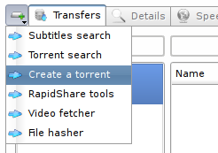
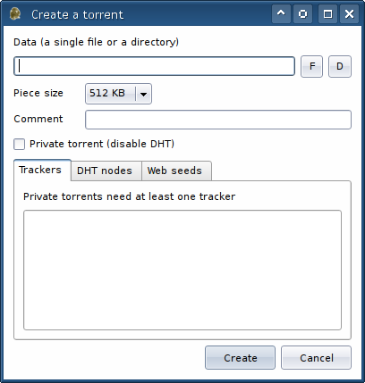

Creating Torrents |
The torrent file creator is available through the app tool menu:

After clicking the menu item a dialog will show up. There you can specify the file (the "F" button) or the directory (the "D" button) that should represent the newly created torrent's contents. Every torrent consists of so called pieces and every piece has a hash attached, which means that the greater number of pieces you have the larger the torrent file grows. Therefore you should choose a larger piece size if you're creating a torrent for a huge file or directory. On the other hand, smaller piece sizes are a better choice if you want to share a few megabytes of data or even less.

A torrent usually has at least one tracker, because if it doesn't, BitTorrent clients have to rely on a distributed network (DHT). If you don't know what implications this has, you should probably pick a BitTorrent web site, get the "announce URL" and input it. The BitTorrent web site is also the place where you should upload the torrent file when it has been generated. The private torrent option may be mandated by some private torrent sites. If you want to simultaneously distribute the torrent via HTTP, enter the corresponding URL(s) in the "Web seeds" tab. Note that FatRat cannot do any HTTP distribution for you, it merely can use it!
Copyright © 2006-2008 Luboš Doležel